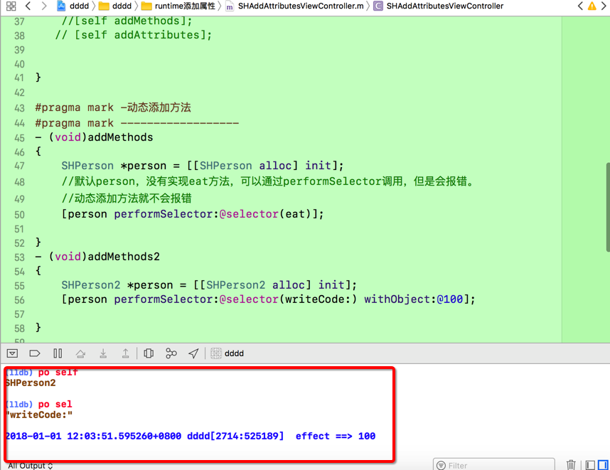

Runtime动态添加方法
一、概念
1.动态添加方法
开发使用场景：如果一个类方法非常多，加载类到内存的时候也比较耗费资源，需要给每个方法生成映射表，可以使用动态给某个类，添加方法解决。
.
2.效果图:

二、代码实现
1.控制器代码:
#pragma mark -动态添加方法
#pragma mark ------------------
- (void)addMethods{
SHPerson *person = [[SHPerson alloc] init];
//默认person，没有实现eat方法，可以通过performSelector调用，但是会报错。
//动态添加方法就不会报错
[person performSelector:@selector(eat)];
}
- (void)addMethods2{
SHPerson2 *person = [[SHPerson2 alloc] init];
[person performSelector:@selector(writeCode:) withObject:@100];
}
2.分类代码
#import "SHPerson2.h"
#import <objc/message.h>
@implementation SHPerson2
void effect(id self, SEL _cmd, NSNumber *meter) {
NSLog(@" effect ==> %@", meter);
}
+ (BOOL)resolveInstanceMethod:(SEL)sel{
if (sel == NSSelectorFromString(@"writeCode:")) {
// class: 给哪个类添加方法
// SEL: 添加哪个方法
// IMP: 方法实现 => 函数 => 函数入口 => 函数名
// type: 方法类型：void用v来表示，id参数用@来表示，SEL用:来表示
//aaa不会生成方法列表
class_addMethod(self, sel, (IMP) effect, "v@:@");
return YES;
}
return [super resolveInstanceMethod:sel];
}
@end
3.调试中效果图: